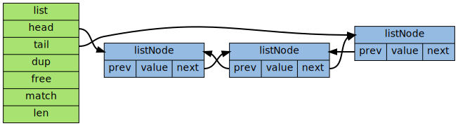

双端链表
Table of Contents
链表作为数组之外的一种常用序列抽象，是大多数高级语言的基本数据类型
因为 C 语言本身不支持链表类型， 大部分 C 程序都会自己实现一种链表类型， Redis 也不例外
双端链表作为一种常见的数据结构， 在大部分的数据结构或者算法书里都有讲解
因此，接下来关注的是 Redis 双端链表的具体实现， 以及该实现的 API 而对于双端链表本身， 以及双端链表所对应的算法， 则不做任何解释
应用
双端链表作为一种通用的数据结构， 在 Redis 内部使用得非常多： 既是 Redis 列表结构的底层实现之一， 同时为大量 Redis 模块所用， 用于构建 Redis 的其他功能
实现 Redis 的列表类型
双端链表还是 Redis 列表类型的底层实现之一，当对列表类型的键进行操作 比如执行 RPUSH LPOP 或 LLEN 等命令时，程序在底层操作的可能就是双端链表
redis> RPUSH brands Apple Microsoft Google (integer) 3 redis> LPOP brands "Apple" redis> LLEN brands (integer) 2 redis> LRANGE brands 0 -1 1) "Microsoft" 2) "Google"
现在的Redis 列表使用两种数据结构作为底层实现： 1. 双端链表 2. 压缩列表 因为双端链表占用的内存比压缩列表要多，所以当创建新的列表键时，列表会优先考虑使用压缩列表作为底层实现，并且在有需要的时候， 才从压缩列表实现转换到双端链表实现
Redis 自身功能的构建
除了实现列表类型以外， 双端链表还被很多 Redis 内部模块所应用：
- 事务 模块使用双端链表依序保存输入的命令
- 服务器 模块使用双端链表来保存多个客户端
- 订阅/发送 模块使用双端链表来保存订阅模式的多个客户端
事件 模块使用双端链表来保存时间事件 time event
类似的应用还有很多，双端链表在 Redis 中发挥着重要的作用
实现
双端链表的实现由 listNode 和 list 两个数据结构构成， 下图展示了由这两个结构组成的一个双端链表实例：

其中 listNode 是双端链表的 节点 ：
typedef struct listNode { struct listNode *prev; // 前驱节点 struct listNode *next; // 后继节点 void *value; // 值 } listNode;
而 list 则是双端链表本身：
typedef struct list { listNode *head; // 表头指针 listNode *tail; // 表尾指针 unsigned long len; // 节点数量 void *(*dup)(void *ptr); // 复制函数指针 void (*free)(void *ptr); // 释放函数指针 int (*match)(void *ptr, void *key); // 比对函数指针 } list;
注意，listNode 的 value 属性的类型是 void * ，说明这个双端链表对节点所保存的值的类型不做限制
对于不同类型的值，有时候需要不同的函数来处理这些值，因此， list 类型保留了三个函数指针 dup free 和 match ，分别用于处理值的 复制 释放 和 对比 匹配
在对节点的值进行处理时，如果有给定这些函数，就会调用这些函数
另外，从这两个数据结构的定义上，也可以了解到一些行为和性能特征：
- listNode 带有 prev 和 next 两个指针，因此，遍历可以双向进行：从表头到表尾，表尾到表头
list 保存了 head 和 tail 两个指针，因此，对链表的表头和表尾进行插入的复杂度都为 \(O(1)\)
这是高效实现 LPUSH 、 RPOP 、 RPOPLPUSH 等命令的关键
list 带有保存节点数量的 len 属性，所以计算链表长度的复杂度仅为 \(O(1)\)
这也保证了 LLEN 命令不会成为性能瓶颈
API
以下是用于操作双端链表的 API ，它们的作用以及算法复杂度：
| 函数 | 作用 | 算法复杂度 |
| listCreate | 创建新链表 | O(1) |
| listRelease | 释放链表，以及该链表所包含的节点 | O(N) |
| listDup | 创建给定链表的副本 | O(N) |
| listRotate | 取出链表的表尾节点，并插入到表头 | O(1) |
| listAddNodeHead | 将包含给定值的节点添加到链表的表头 | O(1) |
| listAddNodeTail | 将包含给定值的节点添加到链表的表尾 | O(1) |
| listInsertNode | 将包含给定值的节点添加到某个节点的之前或之后 | O(1) |
| listDelNode | 删除给定节点 | O(1) |
| listSearchKey | 在链表中查找和给定 key 匹配的节点 | O(N) |
| listIndex | 给据给定索引，返回列表中相应的节点 | O(N) |
| listLength | 返回给定链表的节点数量 | O(1) |
| listFirst | 返回链表的表头节点 | O(1) |
| listLast | 返回链表的表尾节点 | O(1) |
| listPrevNode | 返回给定节点的前一个节点 | O(1) |
| listNextNode | 返回给定节点的后一个节点 | O(1) |
| listNodeValue | 返回给定节点的值 | O(1) |
迭代器
Redis 为双端链表实现了一个 迭代器 ， 这个迭代器可以从两个方向对双端链表进行迭代：
- 沿着节点的 next 指针前进，从 表头向表尾 迭代
- 沿着节点的 prev 指针前进，从 表尾向表头 迭代
以下是迭代器的数据结构定义：
typedef struct listIter { listNode *next; // 下一节点 int direction; // 迭代方向 } listIter;
direction 记录迭代应该从那里开始：
- 如果值为 adlist.h/AL_START_HEAD ，那么迭代器执行从表头到表尾的迭代
- 如果值为 adlist.h/AL_START_TAIL ，那么迭代器执行从表尾到表头的迭代
以下是迭代器的操作 API ，API 的作用以及算法复杂度：
| 函数 | 作用 | 算法复杂度 |
| listGetIterator | 创建一个列表迭代器 | \(O(1)\) |
| listReleaseIterator | 释放迭代器 | \(O(1)\) |
| listRewind | 将迭代器的指针指向表头 | \(O(1)\) |
| listRewindTail | 将迭代器的指针指向表尾 | \(O(1)\) |
| listNext | 取出迭代器当前指向的节点 | \(O(1)\) |
小结
- Redis 实现了自己的双端链表结构
- 双端链表主要有两个作用：
- 作为 Redis 列表类型的底层实现之一
- 作为通用数据结构，被其他功能模块所使用；
双端链表及其节点的性能特性如下：
- 节点带有前驱和后继指针，访问前驱节点和后继节点的复杂度为 \(O(1)\) ， 并且对链表的迭代可以在从表头到表尾和从表尾到表头两个方向进行
- 链表带有指向表头和表尾的指针，因此对表头和表尾进行处理的复杂度为 \(O(1)\)
- 链表带有记录节点数量的属性，所以可以在 \(O(1)\) 复杂度内返回链表的节点数量（长度）
Next：字段 Previous: 双向链表 Home: 内部数据结构